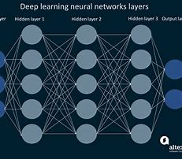

What is CNN?
Convolutional Neural Networks (CNNs) are a class of deep learning models, primarily used for image processing, classification, and segmentation tasks. They are designed to automatically and adaptively learn spatial hierarchies of features from the input data.
